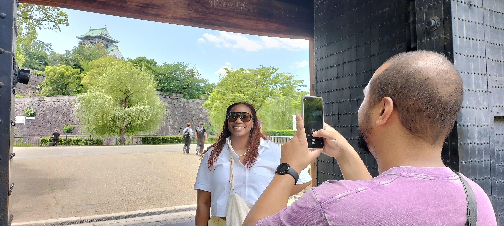
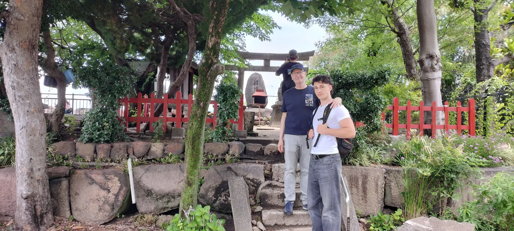

徳川が語った物語、いまの研究が明らかにしたこと、失われたり隠されたりしたもの、そしてそこに生きた人々
大阪城の物語は、4世紀を超える日本史に広がっています。豊臣秀吉が百姓の出から天下人へ上り詰めたところから始まり、1614〜1615年の二度の大坂の陣を経て、徳川幕府が計画を大きく変えて城を再建するに至ります。いま建っているのは、秀吉が築いた城ではありません。勝者が、秀吉の埋め立てられた基礎の上に築き上げた城です。
大阪城は大阪市中央区にある、日本を代表する城です。1583年、豊臣秀吉が石山本願寺の跡地で築城を始め、前例のない規模と華麗さを誇る城になりました。1615年に豊臣氏が滅んだのち、徳川幕府が城を再建し、秀吉の石垣や基礎の多くを新しい石垣の下に埋めました。
豊臣秀吉は1583年に築城を始め、ここを政権の本拠としました。もとの城は1615年に徳川の手で破壊され、1620年から1630年にかけて、二代将軍・徳川秀忠の命によって、藤堂高虎と小堀遠州の設計で再建されました。徳川の大天守は1626年に完成します。
大坂の陣は、二つの作戦から成り立ちます。大坂冬の陣（1614年）と大坂夏の陣（1615年）です。徳川家康は、豊臣秀頼（秀吉の幼い後継者）が守る城を包囲しました。1615年5月の夏の陣で城は落城し、秀頼とその母・淀殿は自死しました。豊臣氏は滅び、戦国時代はここに終わりを告げました。
1620年に徳川が城を再建する際、秀吉の石垣と基礎を数メートルの盛土で覆い、その上に新しい石垣を築きました。いま見える石垣は徳川期のもので、豊臣期の石垣はその後の工事の下に残っています。
大阪城の石垣、隠された堀、そして戦場跡を、エドワード・イフトディ自身が案内します。1人の歴史家。6人のゲスト。1つの探検。
法人向けチームビルディング：実際の歴史的ジレンマをチームで調査・議論・判断するプライベートセッションを、大阪城公園で行います。
法人向けチームビルディングを見る →学校・大学向け歴史フィールドレッスン：先生が設定したテーマや問いをもとに、実際の歴史的景観の中で生徒と探究します。
学校向けフィールドレッスンを見る →

大阪城の石垣は、守りのための仕掛けだけではありません。政治的な行為が残した、目に見える証拠です。徳川が1620年に城の再建を始めると、豊臣秀吉の初期の石垣を数メートルの盛土の下へ覆い、その上に全く新しい石垣を築きました。
考古学的な調査によって、豊臣期の石積みはのちの徳川の石垣とは明確に異なることが分かっています。豊臣期の角石は長く不規則な形をしており、徳川の石垣はより規則的な切石を用いています。目に見える石垣は徳川期の城に属し、豊臣期の石垣はのちの工事の下に残っています。
有名なタコ石（タコイシ）は、秀吉の初期の石垣ではなく、のちの徳川の城に属します。その巨大な大きさは、天下普請の制度で全国から動員された大名たちが行った、徳川による大坂城再建の途方もない規模を示しています。
2025年に開館した豊臣石垣館では、1984年に考古学者が初めて確認し、その後発掘された豊臣期の石垣の一部を見学できます。数世紀にわたり、秀吉の城の残っていた遺構は、のちの徳川の工事の下に埋もれていました。大阪城の石垣は石そのものではありません — 誰が歴史を書くのかという問いへの、物理的な証拠です。
ここに挙げる文献はすべて英語で出版されています。この歴史をさらに知りたい方は、ぜひ手に取ってみてください。
大阪城の物語は、はるかに大きな歴史の一章にすぎません。
法人向けチームビルディング：実際の歴史的ジレンマをチームで調査・議論・判断するプライベートセッションを、大阪城公園で行います。
法人向けチームビルディングを見る →学校・大学向け歴史フィールドレッスン：先生が設定したテーマや問いをもとに、実際の歴史的景観の中で生徒と探究します。
学校向けフィールドレッスンを見る →研究：エドワード・イフトディ（大阪拠点の歴史家・大阪城専属の歴史家）。
この再構成は、同時代のヨーロッパ人の記録、日本の考古学研究、歴史地理学、そして現存する物理的景観に基づいています。